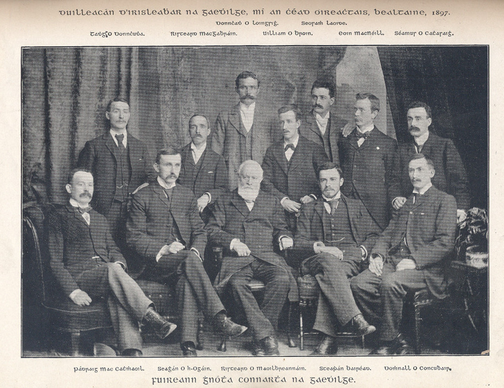

Bunaitheoirí Chonradh an Gaeilge
 Seo cuid de na baill:- Dubhghlas de hÍde, Daithí Coimín, Risteard Ó Dubhthaigh, Diarmaid Mac Suibhne Brian Ó Luanaigh, Seosamh Ó Longáin, Tomás Ó Néill Ruiséal, George Sigerson, Maxwell Close, Uileag de Búrca, Eoin Ó Nualláin
D'aithin an cumann seo namhaid amháin gasta go leor, an t-imreoir sleamhain glic úd a raibh trácht againn roimhe air, agus d'éirigh leo i 1978, tabhairt ar Bhord an Oideachais Náisiúnta agus ar Bhord an Mheánoideachais an Ghaeilge a chur ar chlár na scoileanna. Nuair a d'éirigh easaontas i measc bhall an chumainn agus nuair a rinneadh scoilt dá bharr, rugadh eagraíocht úr.Sa bhliain 1880 a tháinig **Aontacht na Gaeilge** ar an tsaol, agus cuid de na fir ba mhó gníomh leo mar bhaill as *The Society for the Preservation of the Irish Language*. Le tús a chur le hobair na cúise, thug siad faoi ábhar clóbhuailte a sholáthair i nGaeilge: leabhair scoile, agus leabhar urnaithe. Agus chinn siad go mbunódh siad iris úr. Ní obair í seo a dhéantar gan airgead. Bhí de ádh ar an chúis, fear flaithiúil, a bheith ar an fhód i measc na mball, agus é sásta tarraingt as a phóca féin sa dóigh go gcuirfí cuid de scéimeanna an chumainn chun cinn. Ba é sin an tUrramach Maxwell Close. Ba é an fear seo fosta a d'fhág £1,000 punt ina thiomna ag Acadamh Ríoga na hÉireann mar chuidiú le foclóir Gaeilge a chur i gcló.
D'éirigh le *Aontacht na Gaeilge* an irisleabhar a bhí beartaithe a chur i gcló i mí na Samhna 1882. 'Stair atá sa chuid eile', mar a deir an Béarla. Tá a fhios againn faoin ábhar a cuireadh i gcló san iris. Ailt agus aistí léannta, a bhain leis an teanga agus a cúis, amhráin agus filíocht agus ábhar foghlamtha. Bhí an tÁbhar mór ann as seanlitríocht na Gaeilge ann chomh maith, ar ndóighe, ní dhearnadh faillí sa Rúraíocht, nó san Fhiannaíocht, nó sa Ghaeilge Chlasaiceach: Scéalta ón Táin, Scéalta ó Chéitinn, Iomramh nó beirt, dánta ón mheánaois, aislingí agus filíocht nach iad ón 18ú haois. Tugadh faoi dhíospóireacht léannta i ngnoithe gramadaí, focleolaíochta, agus staire. Cé go raibh Béarla go leor san iris, bhí mórchuid Gaeilge ann, agus ba léir gur aici a bhí tús áite. Tháinig an Ghaeilge ar ais de phreab i saol intleachtach na hÉireann, rinneadh nuatheanga chlóbhuailte sholadach di le haon bhuille amháin. An troid anama a bhí an teanga a dhéanamh, ní dhearnadh faoi cheilt iomlán feasta í. Agus rud eile de, an iarraidh seo ní dhéanfaí dearmad den dream a thug an teanga leo ó aimsir na Tána, an dream ba lú acmhainn sa tír: éisteofaí leo féin, lena gcuid seanchais ar fad, agus lena gcuid scéalta.